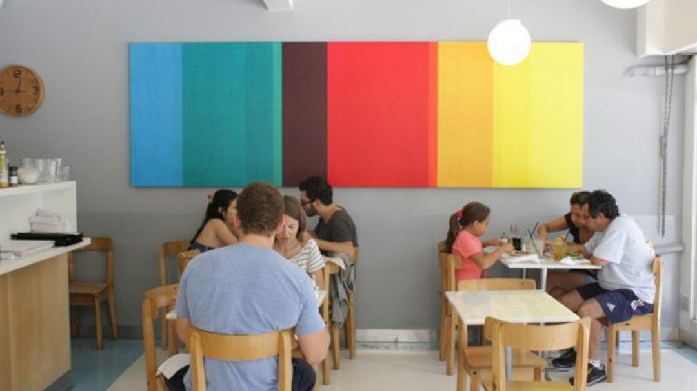

Somos una cafetería y pastelería en el corazón de Villa Crespo. Y mucho más que eso, Crespín es el punto de encuentro elegido por músicos, dibujantes, artistas, familias y trabajadores en el barrio. Es un bar clásico y único en donde la pastelería, desayunos, brunch y sándwiches están hechos con materias primas de la mejor calidad, cuidando cada detalle de la elaboración. Servimos café de los mejores orígenes, y cuidamos su preparación utilizando maquinas de última tecnología. Nuestra propuesta es para que todas y todos se sientan parte y vivan un trato y una experiencia única.
